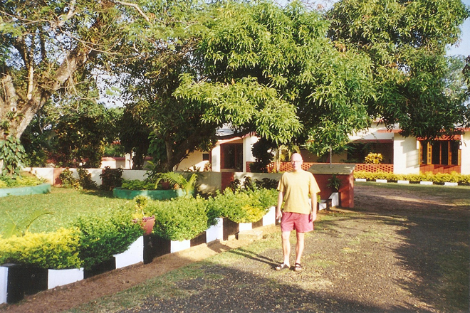
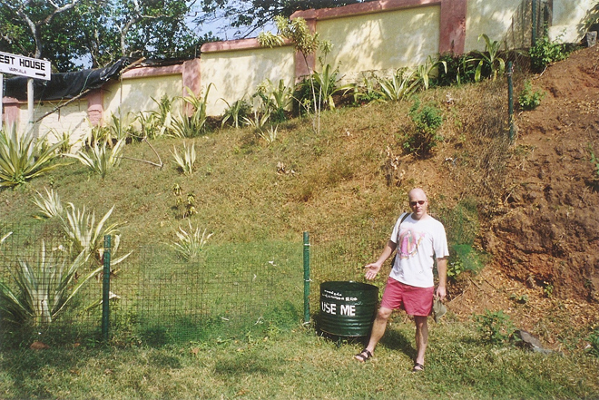
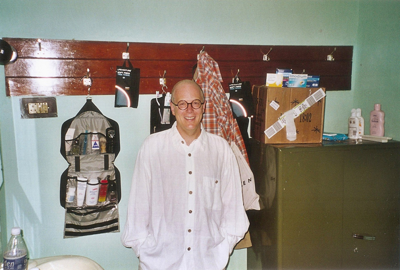
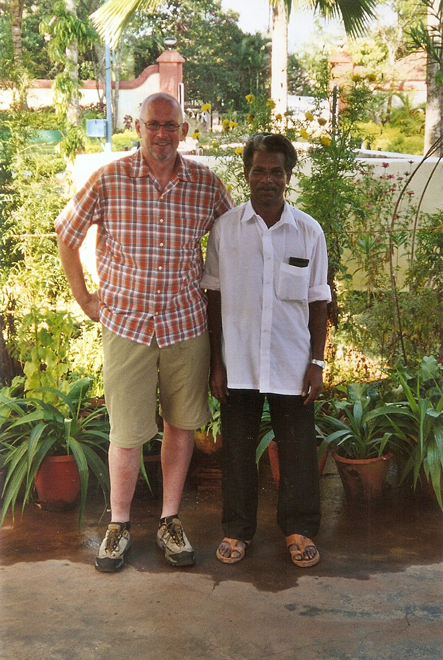
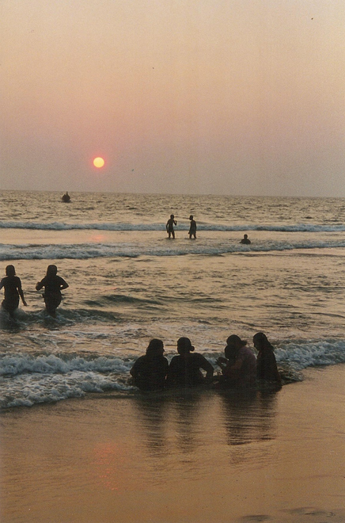
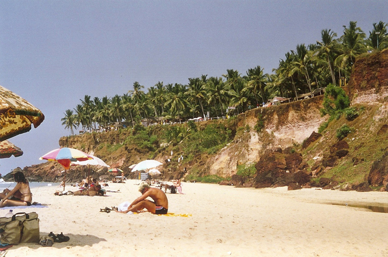
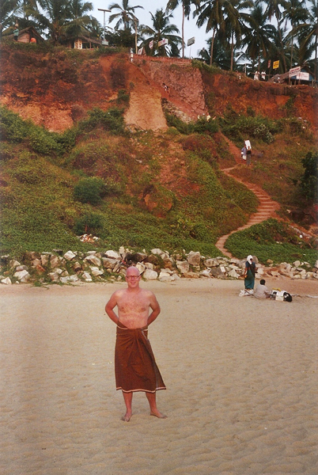
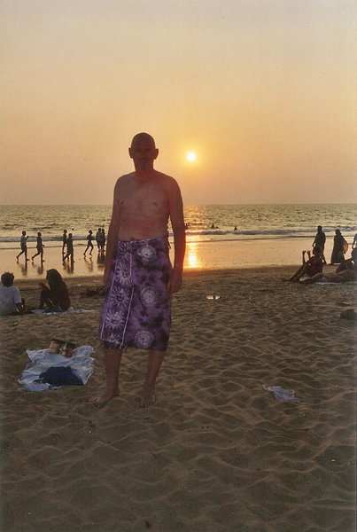
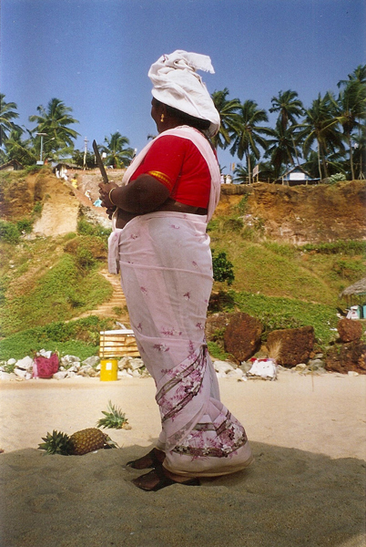
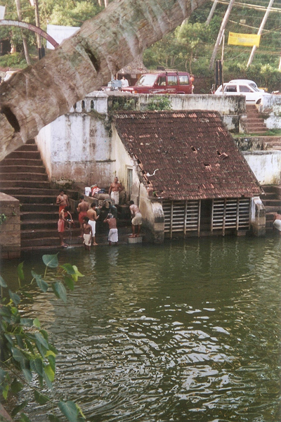

Government Guest Houses are run for the civil service so that employees would always have somewhere to stay, when on a work trip, which are cheaper than a hotel. In the quiet season they are let out to the public and are astonishingly good value for an albeit simple room. We booked this one in Varkala in the days before the internet and it took several phone calls from England to get through to someone who could speak English (many people in Kerala only speak Hindi or Malayalam). The phone calls probably cost more than the cost of the accommodation. Arriving on Christmas Eve, the caretaker tried to tell us that they were "fully booked", even though the place was deserted. We refused to move as there was no where else to go: I demanded to see the reservation book and we found our booking despite them having misspelled my name. The caretake grudgingly admitted his mistake and offered us egg curry (made by his mother) as a welcome placatory gesture.









